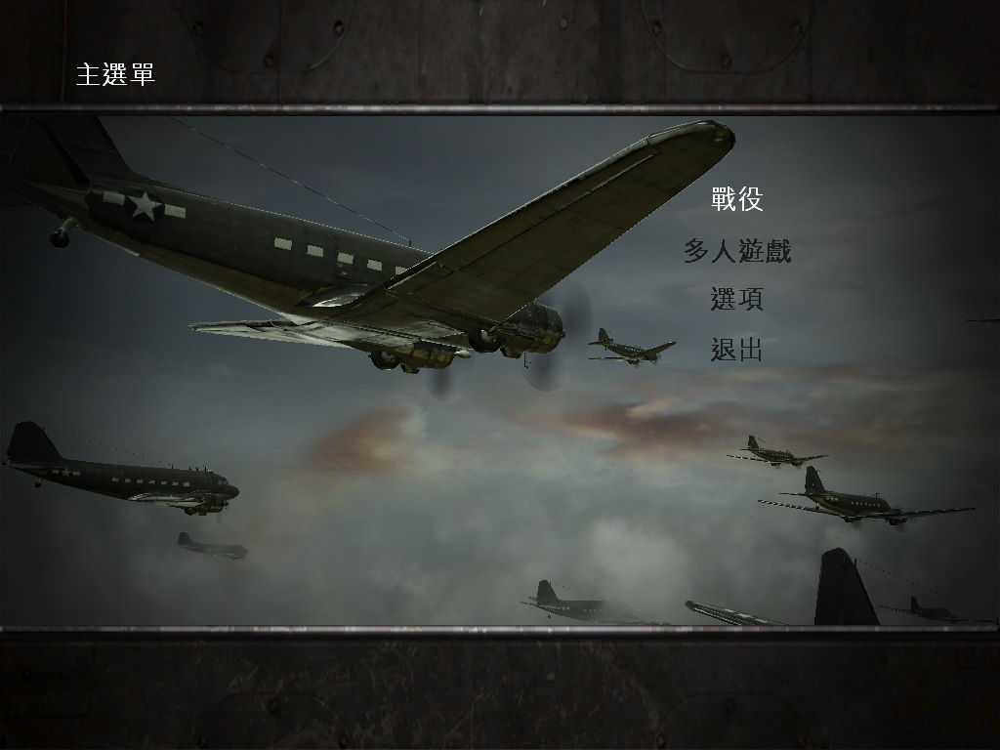
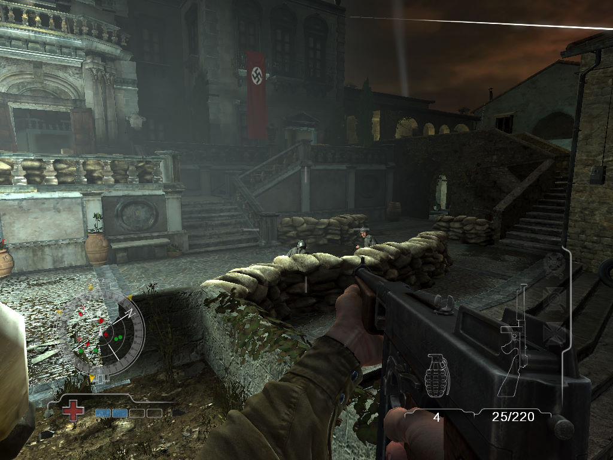

名稱：榮譽勳章：空降神兵／神兵天降 (Medal of Honor: Airborne，中文／英文版) 簡介：EA 2007年出品的第一人稱射擊遊戲 [待補]。

保護：光碟SecuROM 7.33+序號（3WXX-YWZ7-XUHZ-GKWM-X8JA），需使用YASU屏蔽工具 備註：VirtualBox無法執行，VMware可執行，但顏色不對。建議使用Win64實機執行。 備註：遊戲需要安裝PhysX（光碟上有7.7.9版安裝程式）。 備註：進入遊戲後，若發現中文版變英文版，可進行下列修改： 1.到「我的文件\EA Games\Medal of Honor Airborne(tm)\Config」資料夾。 2.打開MOHASettings.ini。 3.將Language = INT改成TCH。 檔案：moha_update1_1.rar = 1.1更新檔 moha_update1_2.rar = 1.2更新檔（需先更新至1.1） moha_update1_3.rar = 1.3更新檔（需先更新至1.2） nocd10.rar = 1.0免光碟檔 nocd13.rar = 1.3免光碟檔